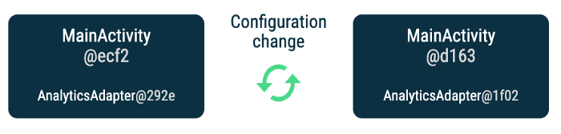
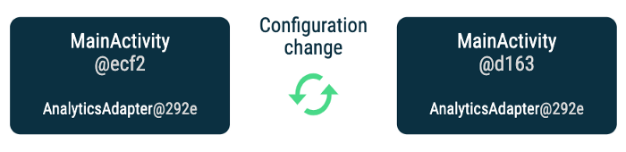

Scoping in Android and Hilt
Learn about scoping in Android and how that relates to scoping in Hilt
Scoping an object A to another object B means that throughout the lifecycle of B, it’ll always have the same instance of A. When it comes to dependency injection (DI), an object A scoped to a container means that the container will always provide the same instance of A until the container is destroyed.
In Hilt, you can scope types to containers or components using annotations. For example, let’s say your app has a UserManager type that handles logins and logouts. You could scope this type to the ApplicationComponent (which is a container managed by the application’s lifecycle) using the @Singleton annotation. The scoped types in the application component flow down the component hierarchy: in the example, the same instance of UserManager will be provided to the rest of the Hilt components in the hierarchy. Any type in the app that depends on UserManager will receive the same instance.
Note: By default, bindings in Hilt are unscoped. They are not part of any component and they can be accessed throughout the entire project. A different instance of that type will be provided every time it is requested. When you scope a binding to a component, it limits where that binding can be used and which dependencies the type can have.
Scoping in Android
With the above definition, you could argue that you can scope a type by using an instance variable of that type in a specific class, and that’s true! Without DI, you could do something like this:
class ExampleActivity : AppCompatActivity() {
private val analyticsAdapter = AnalyticsAdapter()
/* ... */
}
The analyticsAdapter variable is scoped to ExampleActivity’s lifecycle, which means it’ll be the same instance as long as this activity isn’t destroyed. If another class needs to access this scoped variable for some reason, they’ll get the same instance every time too. When a new instance of ExampleActivity is created (e.g. the activity goes through a configuration change), a new instance of AnalyticsAdapter will be created.
With Hilt, the equivalent code is:
@ActivityScoped
class AnalyticsAdapter @Inject constructor() { /* ... */ }
@AndroidEntryPoint
class ExampleActivity : AppCompatActivity() {
@Inject lateinit var analyticsAdapter: AnalyticsAdapter
}
Every time ExampleActivity is created, it’ll hold a new instance of the ActivityComponent DI container that will provide the same instance of AnalyticsAdapter to dependencies below it in the component hierarchy until the activity is destroyed.
 You get a new instance of `AnalyticsAdapter` and `MainActivity` after a configuration change
Scoping with ViewModel
However, we might want AnalyticsAdapter to survive configuration changes! We could say that we want to scope that instance to the activity until the user moves away from it.
For that, you can use an Architecture Components ViewModel because it survives configuration changes.
Without dependency injection, you could have this code:
class AnalyticsAdapter() { /* ... */ }
class ExampleViewModel() : ViewModel() {
val analyticsAdapter = AnalyticsAdapter()
}
class ExampleActivity : AppCompatActivity() {
private val viewModel: ExampleViewModel by viewModels()
private val analyticsAdapter = viewModel.analyticsAdapter
}
And in this way, you scope the AnalyticsAdapter to the ViewModel. As the activity has access to the ViewModel, it can always grab the same instance of AnalyticsAdapter.
With Hilt, you could achieve the same behavior by scoping AnalyticsAdapter to the ActivityRetainedComponent which also survives configuration changes:
@ActivityRetainedScoped
class AnalyticsAdapter @Inject constructor() { /* ... */ }
@AndroidEntryPoint
class ExampleActivity : AppCompatActivity() {
@Inject lateinit var analyticsAdapter: AnalyticsAdapter
}
 You get the same instance of `AnalyticsAdapter` after a configuration change using ViewModel or Hilt’s `ActivityRetainedScope` annotation
If you still want to keep the ViewModel because it needs to perform some view logic while complying with good DI practices, you can use Hilt to provide the ViewModel dependencies using @ViewModelInject as specified in the docs. This time, AnalyticsAdapter doesn’t need to be scoped to ActivityRetainedComponent because it is now manually scoped to the ViewModel:
class AnalyticsAdapter @Inject constructor() { /* ... */ }
class ExampleViewModel @ViewModelInject constructor(
val analyticsAdapter: AnalyticsAdapter
) : ViewModel() { /* ... */ }
@AndroidEntryPoint
class ExampleActivity : AppCompatActivity() {
private val viewModel: ExampleViewModel by viewModels()
private val analyticsAdapter = viewModel.analyticsAdapter
}
What we’ve seen so far can be applied to all Hilt components that are managed by Android framework lifecycle classes; see the full list of scopes available here. Circling back to our initial example, scoping to the ApplicationComponent is the same as having an instance of that type in the application class without using DI principles.
Scoping with Hilt vs ViewModel
The advantage of scoping with Hilt is that scoped types are available in the Hilt component hierarchy whereas with ViewModel, you have to manually access the scoped types from the ViewModel.
The advantage of scoping with ViewModel is that you can have ViewModels for any LifecycleOwner objects in your application. For example, if you use the Jetpack Navigation library, you can have a ViewModel attached to your NavGraph.
Hilt provides a limited number of scopes. You might find that you don’t have a scope for your particular use case — for example, when using nested fragments. For that case, you can fall back to scoping using ViewModel.
Injecting ViewModels with Hilt
As seen above, you can use @ViewModelInject to inject dependencies into ViewModels. Under the hood, these bindings are kept in the ActivityRetainedComponent, which is why you can only inject types that are either unscoped, or scoped to ActivityRetainedComponent or ApplicationComponent.
The ViewModel factory generated by Hilt is available in the getDefaultViewModelProviderFactory() method of @AndroidEntryPoint-annotated activities and fragments. That gives you more flexibility as you can use it in ViewModelProvider to obtain other ViewModels, e.g. those scoped to a BackStackEntry.
Scoping can be costly because the provided object stays in memory until the holder is destroyed. Be thoughtful about the use of scoped objects in your application. It is appropriate to scope objects with an internal state that requires the same instance to be used, objects that need synchronization, or objects that you have measured to be expensive to create.
However, when you do need to scope, you can use Hilt’s scoping annotations or the Android framework directly.